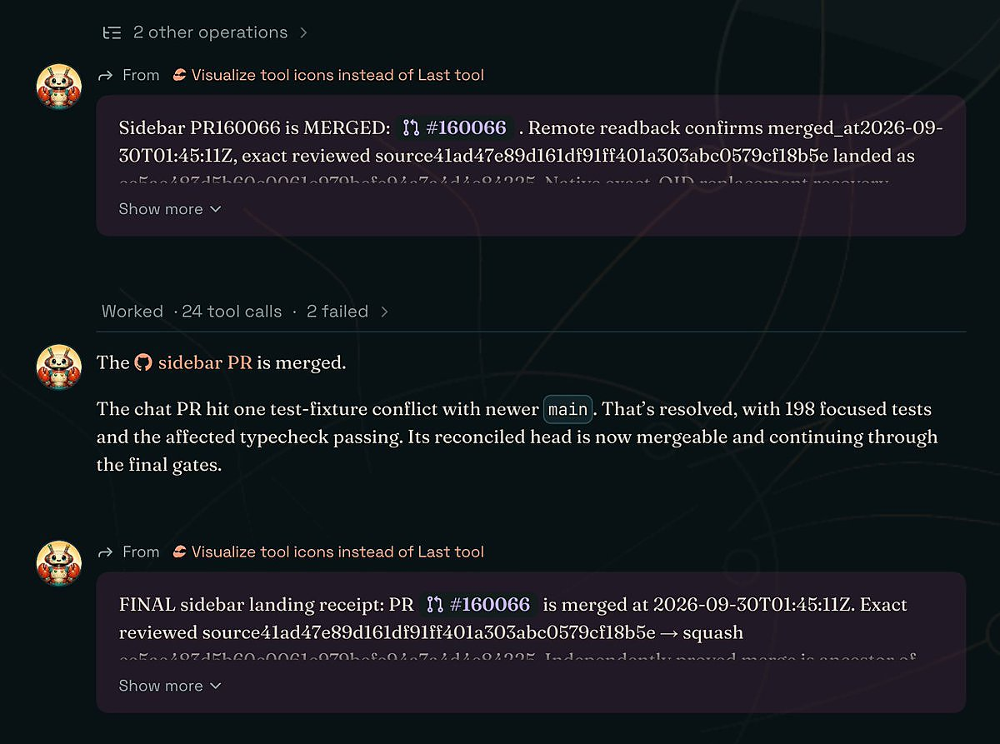
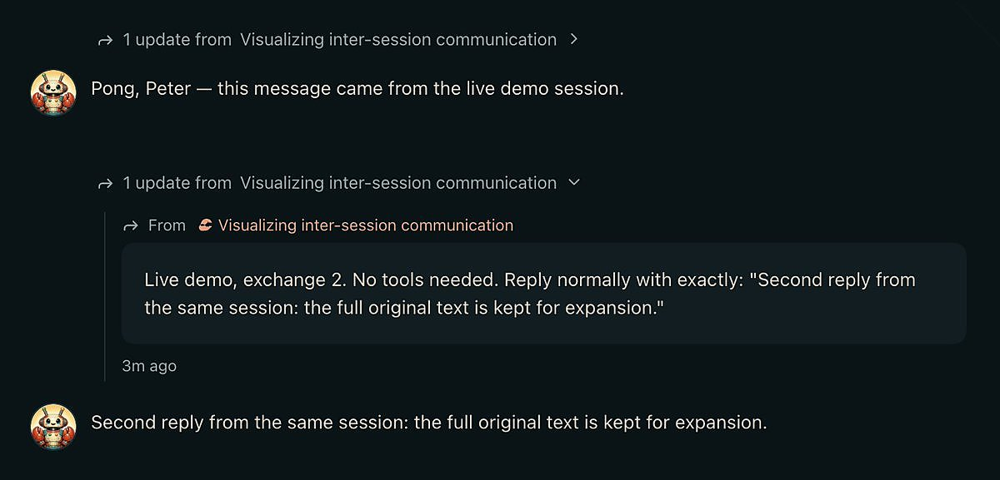

AI 日报 · 10月2日
Claude 进入银行工作流，Gemini Skills 接棒 Gems
Anthropic 披露巴克莱银行的 Claude 部署进展；Google 推出 Gemini Skills 并公布 Gems、Opal 迁移安排。Builder 动态与公开视频继续追问 Agent 如何进入真实工作流。
企业 AI
Gemini Skills
Agent 工作流
GitHub Trending
6
Builder 动态
5
今日上榜项目
2
官方发布
1
公开视频
今日要点
深度对话
Sam Altman 谈 Dot：先把早晨还给人
Every 在 DevDay 采访 Sam Altman；下面是受访者对自身工作流的描述，并非 Dot 对所有用户效果的评测。
让 Agent 先分拣紧急事务
Altman 说 Dot 为他筛选早间事务，只有紧急事项才打断深度工作；这是个人使用体验。
把想法变成可审阅版本
他描述给 Dot 留下功能设想，让 Agent 生成多个版本供自己检查，人的选择与反馈仍是流程一部分。
从静态文档转向持续更新
访谈讨论由人和 Agent 共同维护的“活文档”，其内容可随着互动或外部变化更新。
速度改变迭代手感
Altman 称自己使用 Ultrafast 进行提示；更快反馈对个人思考有帮助，但成本与广泛可及性仍是讨论点。
资讯精选
官方发布
建造者动态
Builder 观点与实践
Thibault Sottiaux｜在 ChatGPT 中构建并部署 MCP 服务
Sottiaux 表示，现在可直接在 ChatGPT 中构建、部署 MCP 服务，并选择限定访问或公开共享。具体权限与可用范围仍应以产品界面和官方文档为准。
Google Labs｜Opal 经验进入 Gemini Skills
Google Labs 称 Opal 的工作流定制经验进入 Gemini Skills；Opal 实验计划于 11 月 17 日停止。Google 官方博客另说明，个人账户的 Gems 将从 11 月起逐步迁移。
Aaron Levie｜企业 Agent 的难点在部署层
Levie 认为企业采用 Agent 需要改造旧系统、数据权限、人工介入与持续评估，部署工作会比单纯安装软件更重。这是对落地成本的判断。
Guillermo Rauch｜连接服务要减少静态密钥
Rauch 推介 Vercel Connect，认为 Agent 与应用接入外部服务时，分发静态密钥带来开发和安全负担。其开发者触达数字来自个人帖子，未独立核验。
Peter Steinberger｜折叠多 Agent 的聊天噪声
Steinberger 展示 OpenClaw harness 的界面调整：把 Agent 间通信折成可展开的一行，以降低聊天流噪声。配图来自原帖。


Nikunj Kothari｜保留创始人会面与投资判断
Kothari 说自己已自动化很多工作，但创始人会面、外联，以及投资否决意见等仍亲自处理。这是个人工作流分享，不代表普遍自动化程度。
GitHub Trending
今日上榜的开源项目


项目来自 10 月 2 日北京时间 GitHub Trending 当日列表；避开昨日已重点介绍的仓库。星标与 Fork 是本次 GitHub API 快照，会随时间变化。
今日思考
把 Agent 放进流程，先量边界
巴克莱案例显示，知识检索与邮件分流这类边界较清楚的工作可先积累使用数据；更大规模的开发部署仍是未来目标。接入新 Skills 或 Agent 时，记录任务成功率、人工复核量和权限范围，比只统计启用人数更能判断效果。阅读 Anthropic 原文 →
今日一问：你的团队哪一个重复流程已经有足够清楚的输入、输出和人工接管点？
今日一问：你的团队哪一个重复流程已经有足够清楚的输入、输出和人工接管点？
参考来源
Anthropic｜巴克莱银行扩大 Claude 应用
Google｜Gemini Skills 官方说明
Every｜Sam Altman 访谈视频
Every｜访谈逐字稿
GitHub｜10 月 2 日 Trending
Thibault Sottiaux｜MCP 服务
Google Labs｜Opal 与 Skills
Aaron Levie｜企业 Agent 部署
Guillermo Rauch｜Connect
Peter Steinberger｜Agent 通信界面
Nikunj Kothari｜个人工作流
NVIDIA/OpenShell
cursor/plugins
earendil-works/pi
DietrichGebert/ponytail
tile-ai/tilelang